Le rôle du Panzer III
Conçu comme char moyen destiné au combat contre les blindés ennemis, le Panzer III évolue de prototypes légers à des versions de série engagées sur tous les fronts entre 1939 et 1943.
Panzer III Ausf. A (1937)
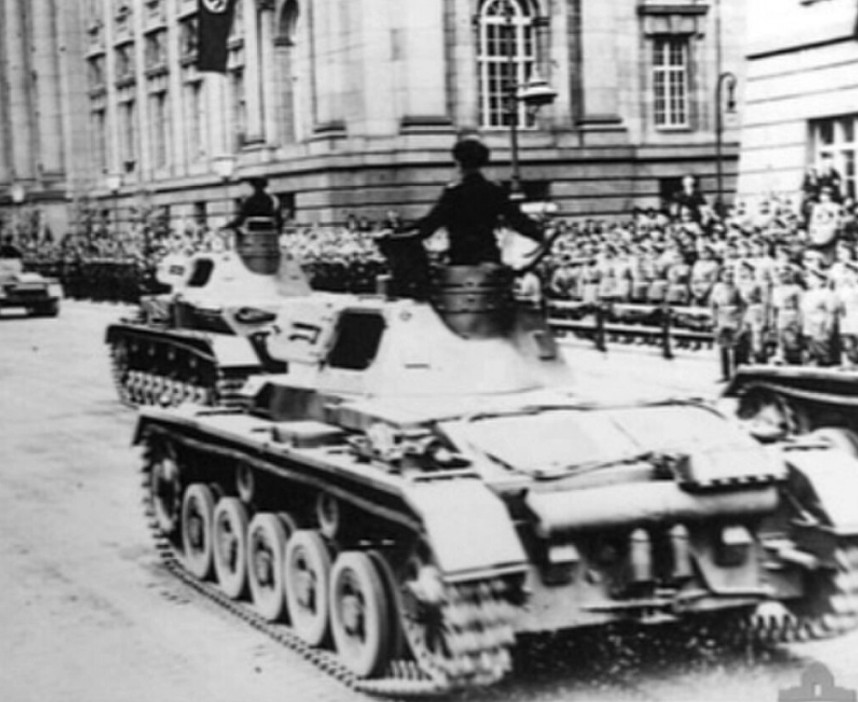
Premier prototype, blindage léger, canon de 3,7 cm.
Panzer III Ausf. B (1937)
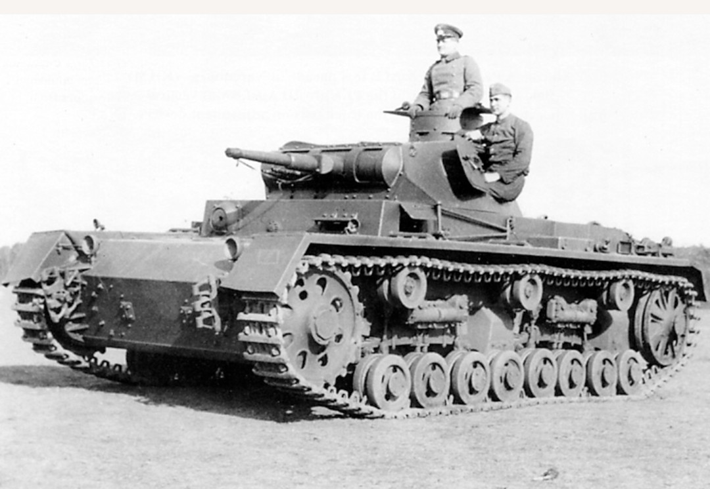
Prototype amélioré, suspension modifiée.
Panzer III Ausf. C (1937)
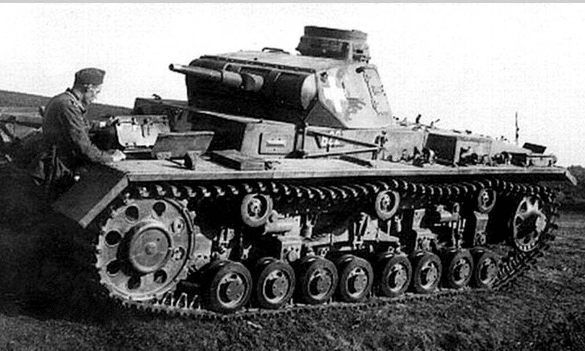
Troisième prototype, optimisation du châssis.
Panzer III Ausf. D (1938)
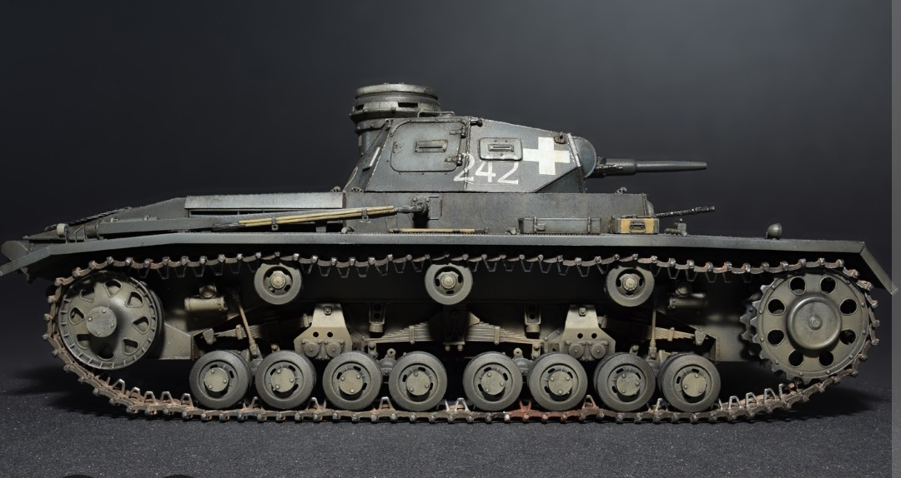
Dernier prototype avant la production de série.
Panzer III Ausf. E (1939)
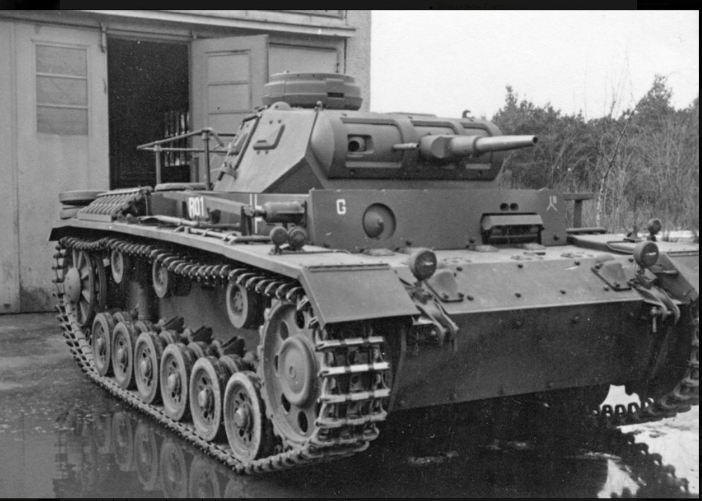
Première version de série, engagée en Pologne et en France.
Panzer III Ausf. F (1939)
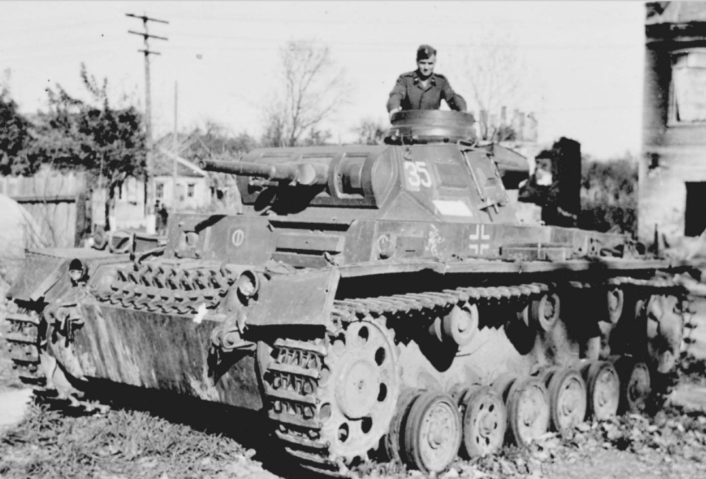
Version de transition, fiabilité améliorée.
Panzer III Ausf. G (1940)
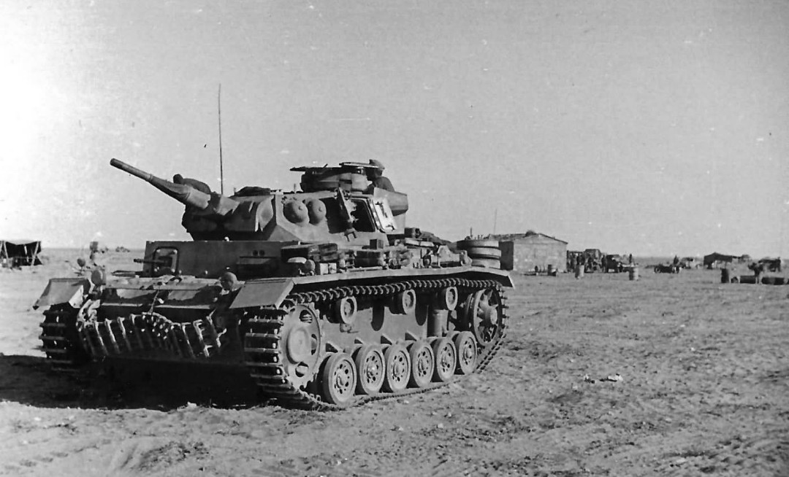
Blindage renforcé, engagé sur le Front Ouest.
Panzer III Ausf. H (1940)
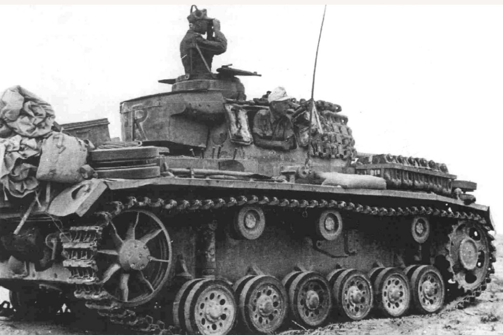
Blindage frontal 30+30 mm, meilleure protection.
Panzer III Ausf. J (1941)
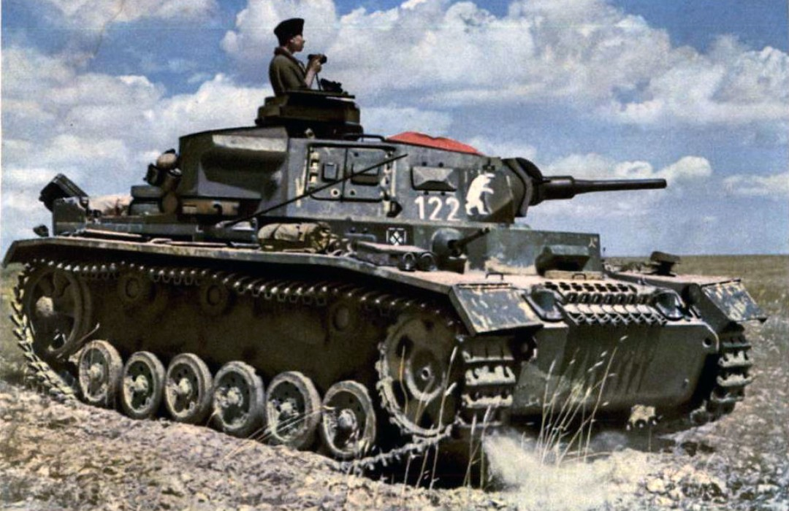
Version la plus répandue, blindage 50 mm.
Panzer III Ausf. K (1942)
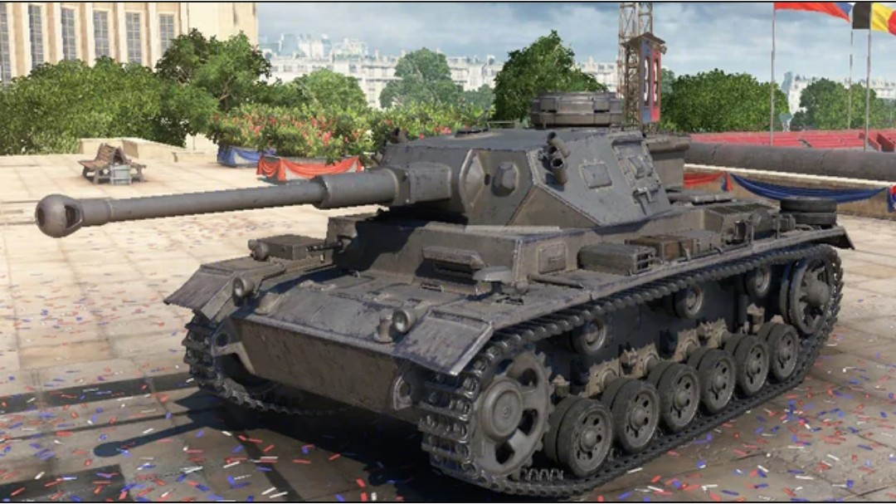
Version de commandement avec radios renforcées.
Panzer III Ausf. L (1942)
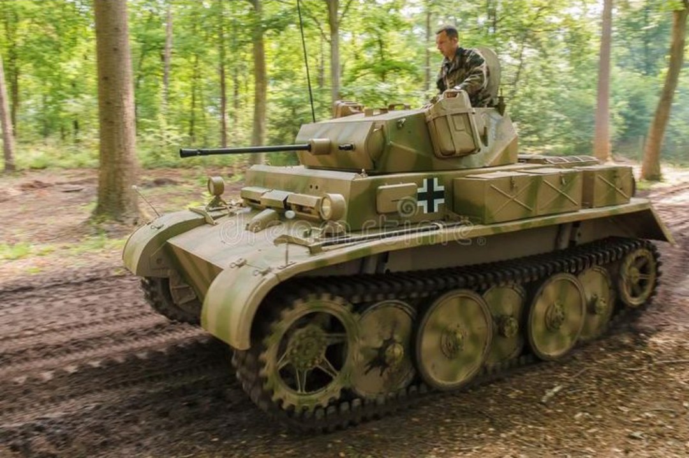
Canon long 5 cm L/60, meilleure capacité antichar.
Panzer III Ausf. M (1943)
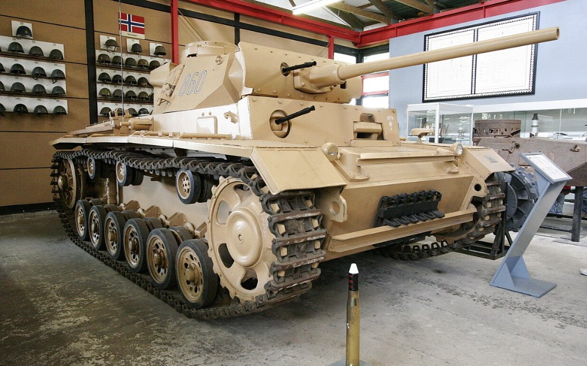
Version tardive, parfois équipée de Schürzen.
Panzer III Ausf. N (1943)
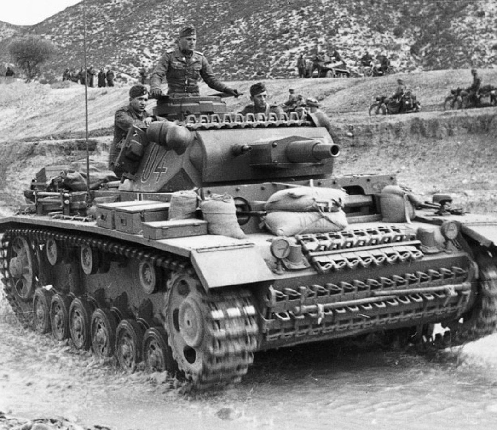
Canon court 7,5 cm, soutien d’infanterie.
Panzer III – Afrika Korps

Panzer III Ausf L sable, numéro 7, Afrika Korps.

Panzer III Ausf L avec équipage dans le désert.